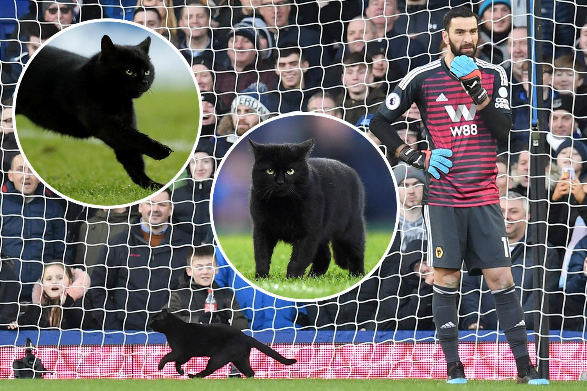

Lion Meowssi Interview
“We may have claws, but we play with heart.”

It doesn’t run blindly; it prowls. It waits, watches, and then strikes.
There’s always been something magnetic about Lionel Meowssi.
On the pitch, it moves like an artist—graceful, balanced, feline in every motion. Off it, there’s a calmness, almost a meditative stillness.
When the whistle blew on Wednesday night at The Den Arena, a small but significant moment arrived: Meowssi scored its first-ever Champions League goal for FC Animalia — a perfectly curved free kick that bent over Manchester City’s wall and into the top corner, sending the home crowd into pure delirium.
“It was instinct,” it said, tail flicking lightly, composed rather than elated. “The wall was tall, but I saw a gap. In that moment you don’t think — you just trust the rhythm, trust the instant your paw meets the ball. It’s more instinct than technique.”
The goal came in first-half stoppage time, leveling the match 1–1 after Haaland’s early strike. Even after Kylian Mambappé was sent off in the 73rd minute, Animalia stood firm — goalkeeper Buffhound made 15 saves to keep the scoreline intact. A single point, a hard-earned draw, and the club now sits 14th in the group standings.But for Meowssi, the night meant far more than a draw.
“Of course I’m proud,” it admitted. “But more than that, we showed who we are.People look at us — a team of animals — and expect chaos. They forget that instinct can be disciplined.Football is about timing, precision, and patience — the very things cats do best.” Since arriving at The Den Arena last summer, the 21-year-old forward has been quietly growing into a more mature figure. Last season, with 9 goals and 13 assists, it led Animalia back to the Champions League for the first time in years. This first goal on Europe’s biggest stage felt like the perfect reward.
It isn’t loud or theatrical — yet somehow, Meowssi has become the emotional core of this team. Renowned for its remarkable balance and low center of gravity, its dribbling often seems to defy physics, as though even gravity bends to its rhythm.
When asked whether it feels the “weight of leadership,” Meowssi just gave a slow, knowing smile. “I don’t want pressure,” it said. “I want presence.The club gives me the chance, the fans give me belief — that’s enough. Every time I play, I’m not chasing numbers. I’m chasing flow.When I move right, the defender moves left. When I slow down, time slows with me.That’s when I know — I’m in the zone.”
The Den Arena — its lush green grass and echoing roars — has become its domain.But Meowssi doesn’t take that comfort for granted. “‘Home’ means earning the silence,” it murmured. “When the crowd stops shouting and just watches — that’s when you’re really doing something right.” Off the field, it remains humble, even playful.
“I’m still just a cat from Rosario,” it said with a grin. “I’m chasing the same ball I did as a kitten — only now, the crowd’s a little louder.”
Next week, FC Animalia will face AC Milan, currently 10th in the standings — a fixture that promises both danger and drama. “They’re strong, organized, and cold-blooded,” Meowssi observed. “But that’s the beauty of football — we’ll go there as underdogs, claws out, eyes wide. Maybe this season we’ve only got nine lives left,” it added with a purr of laughter,“but we’ll fight for every single one.”